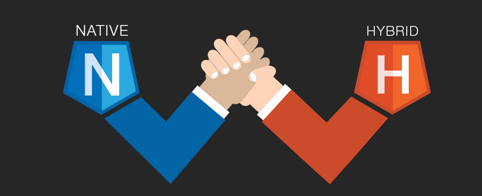
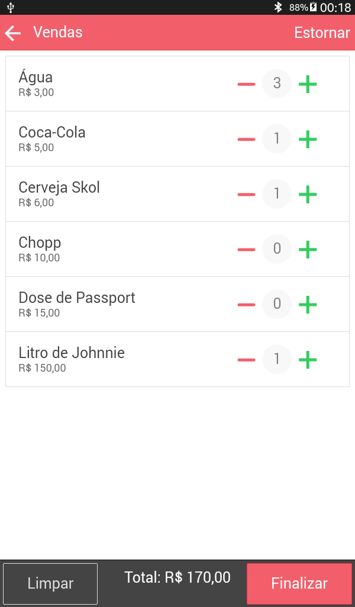
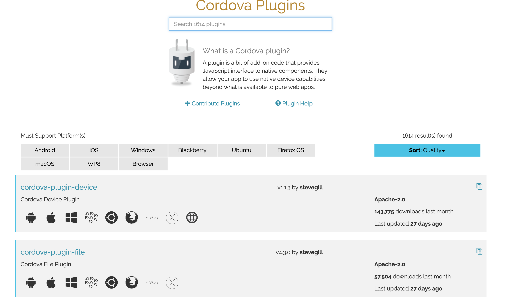
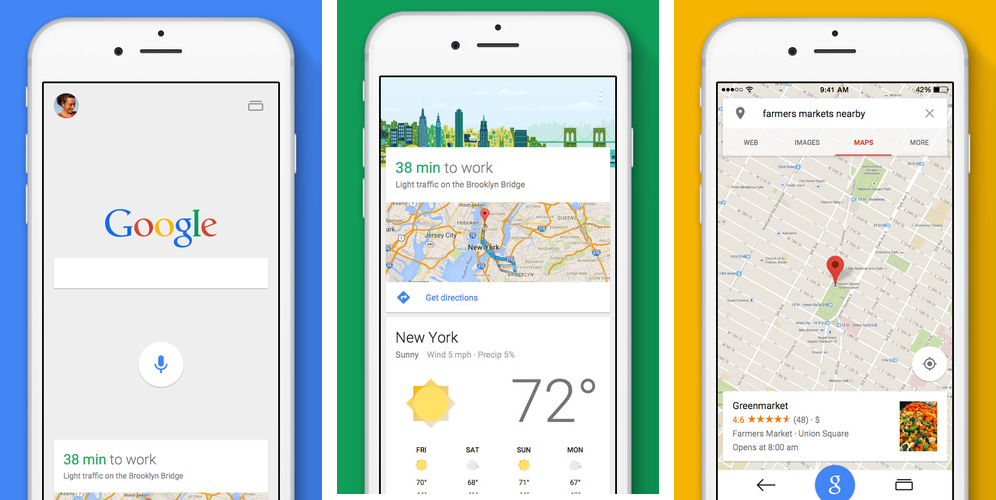
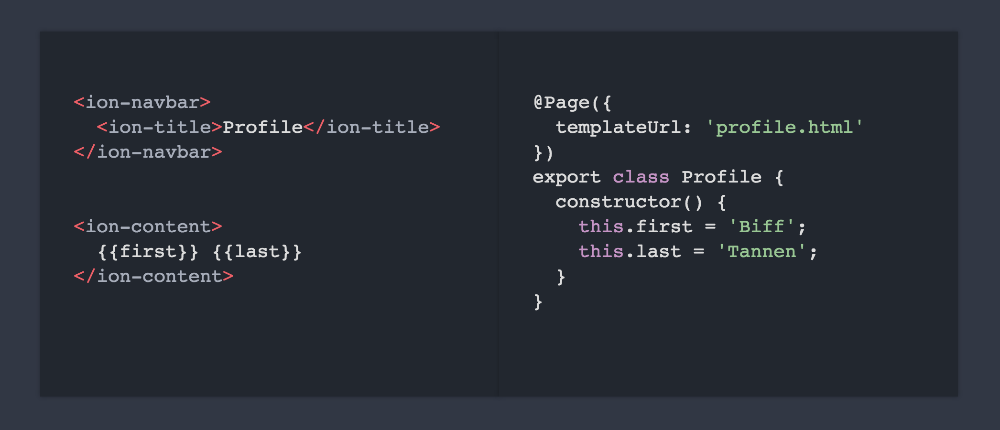
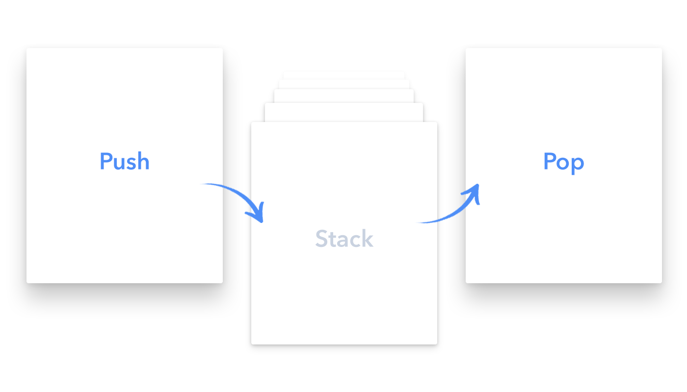

Hybrid Apps with Ionic 2+, Angular 2+ and Typescript

Mike Kobar
CTO @ Aquinas Training
- Stamford, CT - USA
- mkobar
Script
- Native vs. Hybrid application
- Apache Cordova
- Ionic Framework
- UI components
- Ionic 2/3+ and Angular 2/4+
- Typescript
- Ionic Ecosystem
Which one to choose?
Native or Hybrid?

Hybrid Applications!
- HTML5 which looks like native
- Web surrounded by a layer
- Direct access to native APIs
- Familiar web develoment environment and tools

1614 plugins
https://cordova.apache.org/plugins/
Material Design



Native SDKs ...
are full of features!
- Well defined UI components (Guidelines)
- Views
- Navigation and stack history
- Transitions
- Gestures


- Animations
- Modals
- Gestures
- Lists
- Buttons
- Tabs
- Navigation
- Scrolling
- Native App
But there is no SDK for the Web
- It is necessary to complete the
gap between web and native - You need rich components with style and interaction that look like natives
- Icons really needed for the mobile environment are needed
Web technologies you already know
Already knows and likes
(You will feel at home)
Built with
Angular 2+
Extends HTML beyond the web
Proven large-scale application development
UI Components Using Directives and Services
Sass
CSS generated from Sass preprocessor
Easily change the look and feel of your app
The CSS was designed to be easily modified
Based on variables with default values
Reusable Mixins
Your app looks beautiful by default!
Focused on native
- Developed inspired by native SDKs
- Built to work with Cordova
Performance Obsessed
- Hardware accelerated animations (CSS3)
- minimal manipulation of the DOM
- Removes the 300ms delay that WebView imposes
(No more FastClick)
Now we have a Web SDK
- Your App
- Ionic
- Angular
- WebView (Cordova)
- Native App
What has improved in Ionic 2/3+?
Simplified - Clean Javascript
Routes in Ionic 1
$stateProvider
.state('app.conf', {
url: "/conf",
views: {
'menuContent': {
templateUrl: "states/conf/conf.html",
controller: 'ConfController'
}
}
});
$state.go('app.conf');
NavController
You no longer need to create routes!
export class Page {
constructor(private nav: NavController) {
}
openPage(view): void {
this.nav.push(OtherPage);
}
}
Typescript
- Optional static typing
- Ability to compile to smaller JS modules
- Access to EC6 and EC7 features
- Large tool / IDEs support with IntelliSense
UI components
Ionicons

900+ MIT licensed font-icons included
npm install -g ionic cordova

Generates a base structure for your app ready to go out developing
It comes with server LiveReload
Run and pack native apps
...and Ionic still has more!
Ionic Ecosystem
Adoption of Ionic
- 4 million apps
- 28.400+ Github Stars
- Top 50 on Github
- Top 10 trending JS/TypeScript Github
- Ionic CLI 180.000 downloads / month
- v1.0 Final: May 2015
- v2.0 Final: January 2017
- v3.0 Final: April 2017
- v3.6.1: September 2017
Let's Code
May the development gods be with us
Getting Started
http://ionicframework.com/getting-started
</html>
github.com/mkobar
https://mkobar.github.io/ionic2-present/
Inspired by :